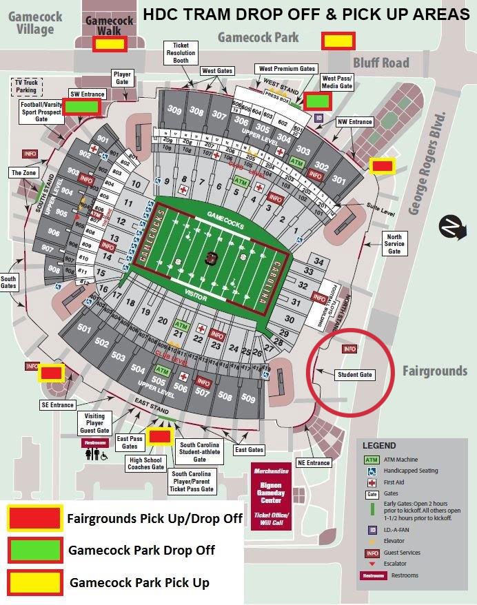

Football ticket requests can be placed through the University of South Carolina Ticketmaster, which is linked to your student email. When ticketing opens for an upcoming game, students will receive an email detailing the ticketing process for that game. Once logged in to Ticketmaster, claims can be placed on the “Claim Tickets” page. Tickets are sorted by sports on this page.
Tickets are assigned based on each student’s point count. Students with more points are prioritized for receiving lower-level tickets.
You can earn points by attending other major sporting events (such as basketball, baseball, swimming). Additionally, enrollment in the Student Gamecock Club will grant you three points.
If you fail to attend a game in which you have claimed a ticket, you can be punished. For the first event missed you will receive a warning, for the second game missed you will lose ticket privileges for two weeks, and three games missed will result in the loss of ticket privileges for the remainder of the academic year.
Claimed tickets are stored on your UofSC Ticketmaster account. Tickets for future athletic events can be found and managed on the Ticketmaster “Manage Tickets” page. You can add your tickets to your phone's wallet for offline access.
Students with lower-level tickets can only enter through the northeast student entrance gate of Williams-Bryce stadium.
Selling student tickets is NOT permitted. Students caught selling student tickets or using another student’s ticket are violating student ticket policy, and as a result may be suspended from all athletic events for a calendar year, lose reward points, be referred to the Office of Student Judicial Programs, and be referred to UofSC Police.
You can claim your ticket through the official South Carolina Rewards App or your associated Ticketmaster account. If you are offered a ticket to an event, you have 24 hours to claim your ticket, or it will be offered to the next student in line.
10% of points gained in a previous academic year will roll over.
Upper-deck tickets are available for select games and cost $55. For more information, visit the Guest Ticket Process Guide.